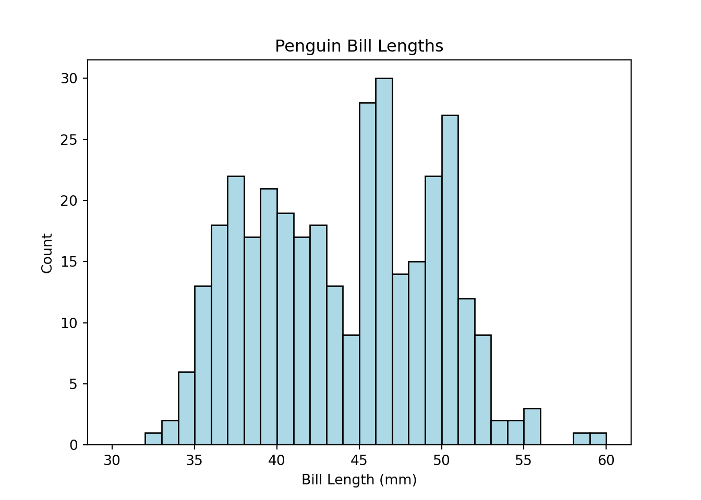
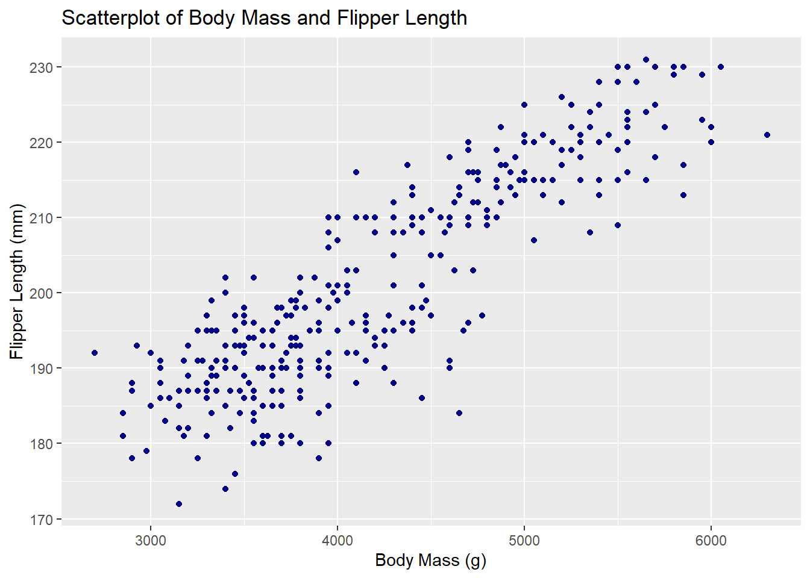
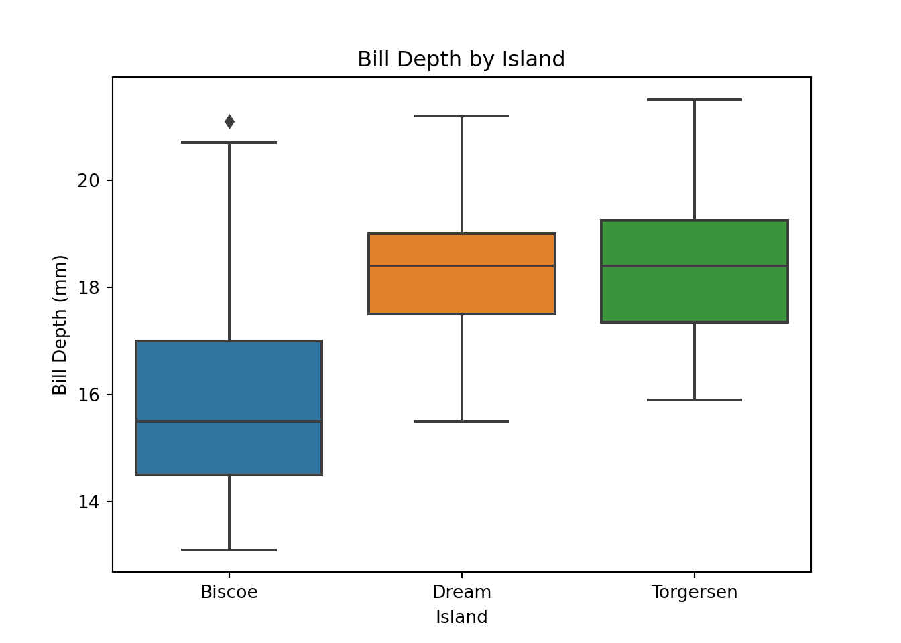
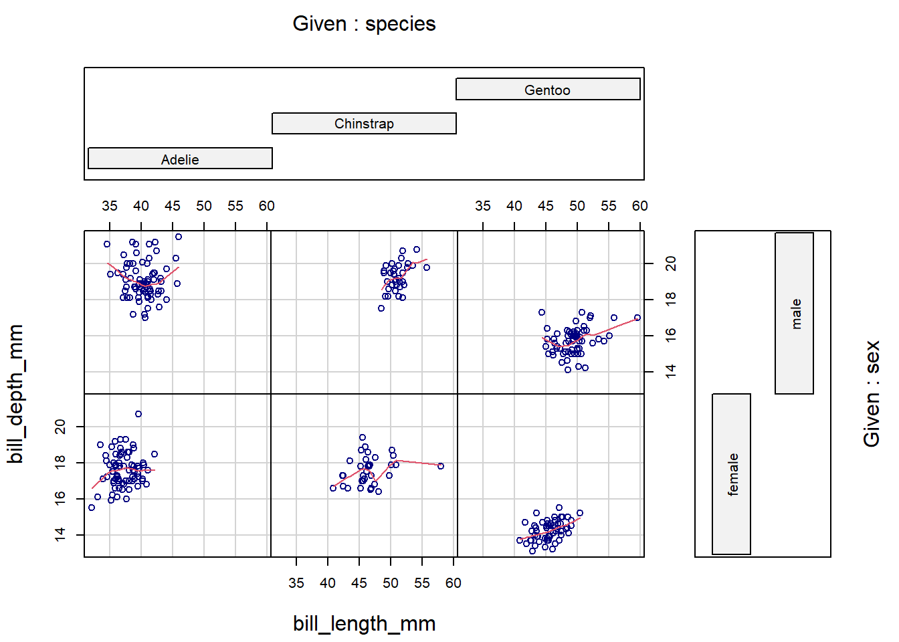
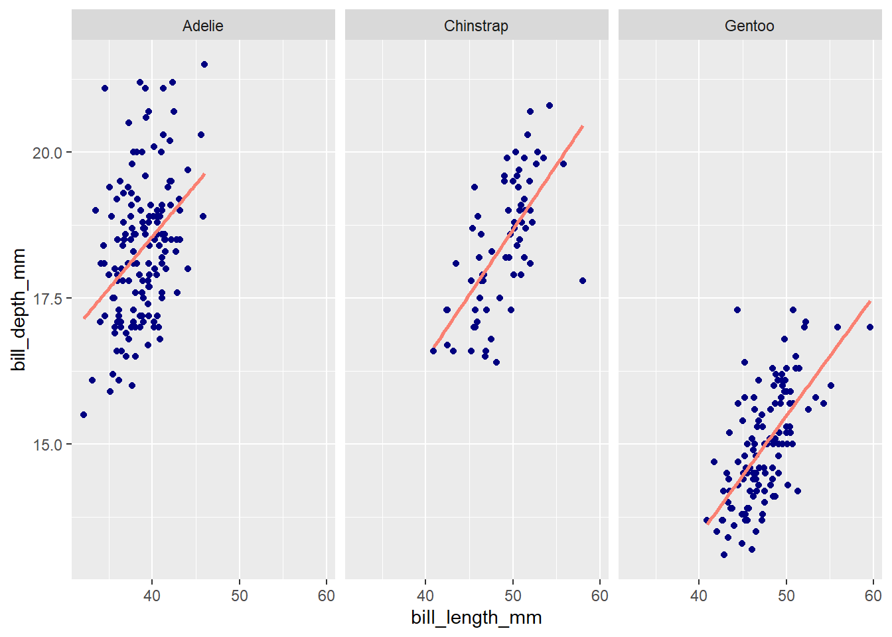

Chapter 7 Basic Plotting and Visualization
This chapter discusses methods for creating plots to explore and understand data. Visualization in Python and R is a gigantic and evolving topic; we don’t pretend to present a comprehensive comparison.
The plots below make use of the palmerpenguins data set, which contains various measurements for 344 penguins across three islands in the Antarctic Palmer Archipelago. The data were collected by Kristen Gorman and colleagues, and they were made available under a CC0 public domain license by Allison Horst, Alison Hill, and Kristen Gorman.
For the R sections below, we show how to make each plot with base R and with ggplot2.
Here’s a glimpse at the data set:
head(penguins)## # A tibble: 6 × 8
## species island bill_length_mm bill_depth_mm flipper_l…¹ body_…² sex year
## <fct> <fct> <dbl> <dbl> <int> <int> <fct> <int>
## 1 Adelie Torgersen 39.1 18.7 181 3750 male 2007
## 2 Adelie Torgersen 39.5 17.4 186 3800 fema… 2007
## 3 Adelie Torgersen 40.3 18 195 3250 fema… 2007
## 4 Adelie Torgersen NA NA NA NA <NA> 2007
## 5 Adelie Torgersen 36.7 19.3 193 3450 fema… 2007
## 6 Adelie Torgersen 39.3 20.6 190 3650 male 2007
## # … with abbreviated variable names ¹flipper_length_mm, ²body_mass_g7.1 Histograms
Visualizing the distribution of numeric data.
Python
The Python library Matplotlib provides the hist() function for plotting a histogram. There are many arguments that can be specified in the hist() function for customizing the histogram plot to fit your needs: Some parameters include the number of bins, the upper and lower bounds on each bin, the coloration, and more.
Below, we show how to generate a histogram of the bill lengths from the penguins dataset. We specified 30 bins, each of which is light blue with a black outline of linewidth = 1. The hist() function defaults to showing no bin outline, which can make it difficult to distinguish bins clearly, so we add in the outlines here.
Note that the bins are left-inclusive and right-exclusive. For example, if a particular bin spans the range of 1 to 3, the bin will include the value 1 but will exclude the value 3 (and will include all values between 1 and 3). In short, bin ranges are [x1,x2), where x1 is the starting point of the bin and x2 is the ending point of the bin.
Notice the semicolon at the end of the plt.hist() function. This suppresses the printing of the array generated to create the histogram.
import matplotlib.pyplot as plt
plt.clf() # clears the current figure to ensure that multiple plots are not overlaid
plt.hist(penguins.bill_length_mm, bins = 30, range = (30, 60),
color = 'lightblue', edgecolor = 'k', linewidth = 1);
plt.title("Penguin Bill Lengths")
plt.xlabel("Bill Length (mm)")
plt.ylabel("Count")
plt.show()
R
Base R’s hist() function generates histograms, and features of the histogram—like the bar color, number of bins/breaks, and so on—can be easily customized with arguments as demonstrated below.
hist(penguins$bill_length_mm, breaks = 25, col = 'lightblue',
xlim = c(30, 60),
main = 'Penguin Bill Lengths',
xlab = 'Bill Length (mm)', ylab = 'Count')The ggplot2 method for generating histograms follows the standard ggplot2 syntax: Initialize a plot with ggplot(), then add layers thereto. Here, the layer to add is geom_histogram().
library(ggplot2)
ggplot(penguins, aes(x = bill_length_mm)) +
geom_histogram(fill = 'lightblue', color = 'black', bins = 25) +
xlim(30, 60) +
labs(title = 'Penguin Bill Lengths',
x = 'Bill Length (mm)', y = 'Count')
7.2 Barplots
Visualizing the distribution of categorical data.
Python
For this example, we generate a barplot showing how many penguins of each species—Adelie, Chinstrap, Gentoo—are represented in the data. We show two ways of doing so here.
First, we can use the function bar() from the Matplotlib plotting library. We determine the per-species penguin counts and then use that data to create the bar plot.
import matplotlib.pyplot as plt
# Determine the number of each species
adelie_counts = len(penguins.loc[penguins["species"] == "Adelie"])
chinstrap_counts = len(penguins.loc[penguins["species"] == "Chinstrap"])
gentoo_counts = len(penguins.loc[penguins["species"] == "Gentoo"])
# Save the counts information as an arrays for input into the bar() function
spec = ["Adelie", "Chinstrap", "Gentoo"]
counts = [adelie_counts, chinstrap_counts, gentoo_counts]
plt.clf()
plt.bar(spec, counts)## <BarContainer object of 3 artists>plt.show()
The data are stored in a pandas Dataframe, which has its own built-in plotting module, plot. As an alternative approach to the one above, we can use the pandas bar() function to recreate the barplot.
plt.clf()
penguins["species"].value_counts().plot.bar()
plt.show()Using this second approach, we generated the same barplot with far less effort. Using the built-in pandas plotting routine proved to be the more efficient method here.
R
To form barplots, we’ll first create a summary data frame containing the statistics we’re looking to plot. Here, that’s simply the sample size of each species in the data set.
species_counts <- as.data.frame(xtabs(~ species, data = penguins))
species_counts## species Freq
## 1 Adelie 152
## 2 Chinstrap 68
## 3 Gentoo 124We can plot those values using the barplot() function in base R, specifying arguments along the way to customize the title/axis labeling, bar colors, and range of the y axis. To add values above the bars, we can follow barplot() with a text() call as below.
penguin_plot <- barplot(Freq ~ species, data = species_counts,
col = c('lightblue', 'cornflowerblue', 'darkslateblue'),
main = 'Species Sample Size',
xlab = 'Species', ylab = 'Count', ylim = c(0, 200))
text(x = penguin_plot, y = species_counts$Freq + 10,
labels = species_counts$Freq)To recreate the bar plot above with ggplot2, one can add a geom_bar() layer to a plot initialized with ggplot().
ggplot(species_counts, aes(x = species, y = Freq)) +
geom_bar(aes(fill = species), stat = 'identity') +
# scale_fill_manual() is used here for bar-color customization
scale_fill_manual(values = c('lightblue', 'cornflowerblue', 'darkslateblue')) +
labs(title = 'Species Sample Size', x = 'Species', y = 'Count') +
# For simplicity, we omit the legend
theme(legend.position = 'none') +
ylim(0, 200) +
# geom_text() is used here to add counts above the bars
geom_text(aes(label = Freq, vjust = -0.5)) 7.3 Scatterplot
Visualizing the relationship between two numeric variables.
Python
The scatter() function, part of Matplotlib, can produce scatterplots in Python. The x and y arguments specify the points to plot. In the example below, we also use the c and marker arguments to customize the point color and point shape, respectively. The xlabel(), ylabel(), and title() functions customize plot labels.
import matplotlib.pyplot as plt
# Remove NA rows, as we only want to plot present data
penguins_no_na = penguins.dropna()
plt.clf()
# 'd' generates diamond markers (learn more about available marker shapes here: https://matplotlib.org/stable/api/markers_api.html#module-matplotlib.markers)
plt.scatter(x = penguins_no_na['body_mass_g'],
y = penguins_no_na['flipper_length_mm'],
c = 'lightblue', marker = 'd')
plt.xlabel('Body Mass (g)')
plt.ylabel('Flipper Length (mm)')
plt.title('Scatterplot of Body Mass and Flipper Length')
plt.show()R
Scatterplots can be generated in base R with the plot() function. The pch argument below modifies the point shape (e.g., 20 = solid circle; 24 = unfilled triangle; etc.)
plot(x = penguins$body_mass_g, y = penguins$flipper_length_mm,
col = 'navy', pch = 20,
main = 'Scatterplot of Body Mass and Flipper Length',
xlab = 'Body Mass (g)', ylab = 'Flipper Length (mm)')To generate a scatterplot with ggplot2, initialize a plot with ggplot(), then add a layer of points with geom_point().
ggplot(penguins, aes(x = body_mass_g, y = flipper_length_mm)) +
geom_point(color = 'navy') +
labs(title = 'Scatterplot of Body Mass and Flipper Length',
x = 'Body Mass (g)', y = 'Flipper Length (mm)')
7.4 Stripcharts
Stripcharts, or strip plots, are one-dimensional scatterplots. Like boxplots, they reveal the distribution of a numeric variable within levels of a categorical variable.
Python
The seaborn package provides the stripplot() function. The user simply specifies which variables they want on the x and y axes. Below, we specify island on the y axis to see the distribution of bill_depth_mm horizontally. Specify the pandas DataFrame using the data argument. Finally, create the plot using plt.show().
import seaborn as sns
import matplotlib.pyplot as plt
sns.stripplot(x = "bill_depth_mm", y = "island", data = penguins)
plt.show()The stripplot help page provides more examples.
R
Base R offers the stripchart() function. To indicate the numeric variable and the grouping variable, you can use formula notation: numeric_var ~ grouping_var. Adding method = 'jitter' to the arguments spreads the points out slightly within each level of the grouping variable, making it easier to see points that might otherwise be obscured by overlap.
stripchart(bill_depth_mm ~ island, data = penguins,
method = 'jitter',
ylab = 'Island', xlab = 'Bill Depth (mm)',
main = 'Stripchart of Bill Depth by Island')Stripcharts can also be made with ggplot2’s geom_jitter() function, as shown below. You can control the amount of jitter with a position argument in geom_jitter().
ggplot(penguins, aes(x = island, y = bill_depth_mm)) +
geom_jitter(aes(color = island), position = position_jitter(0.1)) +
# scale_fill_manual() is used to manually specify group colors
# once aes(color = island) is specified in `geom_jitter()`
scale_color_manual(values = c('lightblue', 'cornflowerblue', 'darkslateblue')) +
labs(title = 'Stripchart of Bill Depth by Island',
x = 'Island', y = 'Bill Depth (mm)') +
theme(legend.position = 'none')## Warning: Removed 2 rows containing missing values (`geom_point()`).
7.5 Boxplots
Visualizing the relationship between a numeric variable and a categorical variable via five-number summaries.
Python
The boxplot() function in seaborn generates boxplots, and functions from Matplotlib, like xlabel() and ylabel(), can be used to control the aesthetics of the plot.
import seaborn as sns
import matplotlib.pyplot as plt
plt.figure()
sns.boxplot(x = "island", y = "bill_depth_mm", data = penguins)
plt.xlabel("Island")
plt.ylabel("Bill Depth (mm)")
plt.title("Bill Depth by Island")
plt.show()
R
The boxplot() function in base R generates boxplots. A user specifies the grouping variable and the numeric variable to be plotted in formula notation: y ~ grouping_var.
boxplot(bill_depth_mm ~ island, data = penguins,
col = c('lightblue', 'cornflowerblue', 'darkslateblue'),
main = 'Boxplot of Bill Depth by Island',
xlab = 'Island', ylab = 'Bill Depth (mm)')To generate a boxplot with ggplot2, add a geom_boxplot() layer to a plot initialized with ggplot().
ggplot(penguins, aes(x = island, y = bill_depth_mm)) +
geom_boxplot(aes(fill = island)) +
scale_fill_manual(values = c('lightblue', 'cornflowerblue', 'darkslateblue')) +
labs(title = 'Boxplot of Bill Depth by Island',
x = 'Island', y = 'Bill Depth (mm)') +
theme(legend.position = 'none')
7.6 Facet plots
Facet plots (also called trellis plots, lattice plots, and conditional plots) are comprised of multiple smaller plots, where each subplot contains a subset of the overall data, with subsets defined by one or more faceting variables.
Python
The seaborn package provides several functions for creating facet plots, including relplot(), displot(), catplot(), and lmplot(). Below we demonstrate the lmplot() function, which allows a user to create scatterplots at certain levels of categorical variable. A user specifies the x and y variables as character strings using the x and y arguments, respectively. The grouping variable is identified with either the col or row arguments. By default, a least-squares lines is added to each plot. Setting ci = None suppresses the confidence interval ribbon.
import seaborn as sns
plt.clf()
sns.lmplot(x = "bill_length_mm", y = "bill_depth_mm",
col = "species",
data = penguins, ci = None)To facet by two variables, provide variables to both the col and row arguments.
plt.clf()
sns.lmplot(x = "bill_length_mm", y = "bill_depth_mm",
col = "species", row = "sex",
data = penguins, ci = None)Set lowess = True for smooth trend lines. Notice also that color can be mapped to the same variable used for faceting.
plt.clf()
sns.lmplot(x = "bill_length_mm", y = "bill_depth_mm",
col = "species", hue = "species",
data = penguins, ci = None, lowess = True)The 1lmplot()1 help page showcases other examples.
R
The coplot() function in base R produces conditioning plots using formula notation: y ~ x | grouping_var. The rows and columns arguments control layout. Below we specify one row of plots. The panel argument controls what action is carried out in each plot. The default is a scatterplot. Below we use the base R panel.smooth function to create scatter plots with a smooth trend line.
coplot(bill_depth_mm ~ bill_length_mm | species,
data = penguins,
panel = panel.smooth,
rows = 1, col = "navy")To condition on two variables, use formula notation with syntax: y ~ x | grp_var1 * grp_var2.
coplot(bill_depth_mm ~ bill_length_mm | species * sex,
data = penguins,
panel = panel.smooth,
col = "navy")
The labels of the conditioning variables unfortunately use a lot of real estate in the margins, and there is no easy way to modify that. However, this design works quite well when we condition on a numeric variable. The coplot() function automatically creates overlapping group intervals to condition on, and the stacked layout of the labels helps us visualize how the relationship between x and y changes between the groups. To manually set the number of groups, use the number argument. Below, we specify four groups to be generated for bill_length_mm.
coplot(flipper_length_mm ~ body_mass_g | bill_length_mm,
data = penguins,
panel = panel.smooth,
number = 4,
rows = 1, col = "navy")Alternatively, ggplot2 provides a intuitive and easy-to-use method for generating facet plots: A user specifies the aesthetics of the plot using standard ggplot2 syntax (i.e., as a series of added layers) and then adds an additional call, facet_wrap() or facet_grid() (the differences are discussed below), specifying the faceting variable(s) to split up the plots by.
ggplot(penguins, aes(x = bill_length_mm, y = bill_depth_mm)) +
geom_point(color = 'navy') +
# Add least-squares line
geom_smooth(method = 'lm', se = FALSE, color = 'salmon') +
# Use formula notation, a character vector, or vars() to
# specify faceting variables; e.g., ~species, c('species'),
# or vars(species)
facet_wrap(~ species)## `geom_smooth()` using formula = 'y ~ x'
The number of rows and columns can be manually specified with nrow and ncol arguments in facet_wrap(). By default, the x and y axes of all facet plots will be on the same scale. The axis ranges can be set to vary freely by adding scales = 'free' as an argument (or, alternatively, scales = 'free_x' or scales = 'free_y' to free just the x or y axis).
Both facet_wrap() and facet_grid() can be used to make facet plots. When faceting based on multiple variables (e.g., species and sex), facet_wrap() will drop group combinations for which there are no data points, whereas facet_grid() will generate a plot for all possible group combinations:
ggplot(penguins, aes(x = bill_length_mm, y = bill_depth_mm)) +
geom_point(color = 'navy') +
geom_smooth(method = 'lm', se = F, color = 'salmon') +
facet_wrap(vars(species, sex))## `geom_smooth()` using formula = 'y ~ x'
ggplot(penguins, aes(x = bill_length_mm, y = bill_depth_mm)) +
geom_point(color = 'navy') +
geom_smooth(method = 'lm', se = F, color = 'salmon') +
# Note that facet_grid() has separate `rows` and `cols` arguments
# for specifying faceting variables
facet_grid(rows = vars(sex), cols = vars(species)) ## `geom_smooth()` using formula = 'y ~ x'